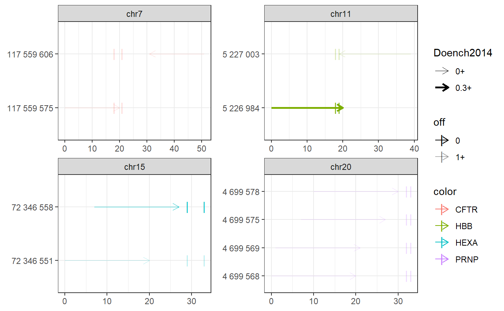
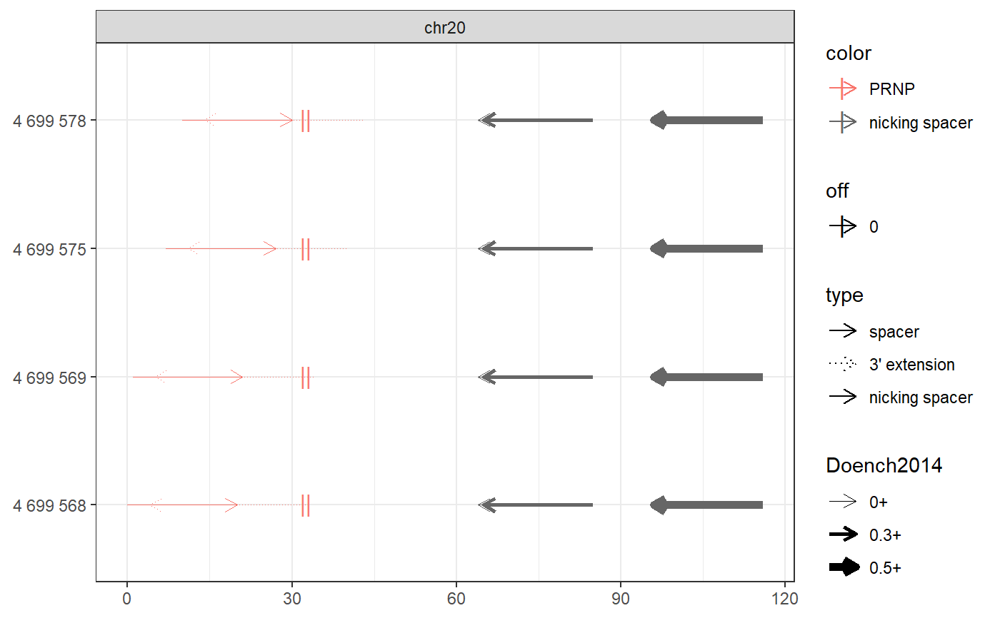

Find prime editing spacers
find_primespacers.RdFind prime editing spacers around target ranges
find_primespacers( gr, bsgenome, edits = get_plus_seq(bsgenome, gr), nprimer = 13, nrt = 16, ontargetmethod = c("Doench2014", "Doench2016")[1], offtargetmethod = c("bowtie", "pdict")[1], mismatches = 0, nickmatches = 2, indexedgenomesdir = INDEXEDGENOMESDIR, outdir = OUTDIR, verbose = TRUE, plot = TRUE, ... )
Arguments
| gr | |
|---|---|
| bsgenome | |
| edits | character vector: desired edits on '+' strand.
If named, names should be identical to those of |
| nprimer | n primer nucleotides (default 13, max 17) |
| nrt | n rev transcr nucleotides (default 16, recomm. 10-16) |
| ontargetmethod | 'Doench2014' or 'Doench2016': on-target scoring method |
| offtargetmethod | 'bowtie' or 'pdict' |
| mismatches | no of primespacer mismatches (default 0, to suppress offtarget analysis: -1) |
| nickmatches | no of nickspacer offtarget mismatches (default 2, to suppresses offtarget analysis: -1) |
| indexedgenomesdir | directory with indexed genomes
(as created by |
| outdir | directory whre offtarget analysis output is written |
| verbose | TRUE (default) or FALSE |
| plot | TRUE (default) or FALSE |
| ... | passed to plot_intervals |
Value
GRanges-class with prime editing spacer
ranges and following mcols:
* crisprspacer: N20 spacers
* crisprpam: NGG PAMs
* crisprprimer: primer (on PAM strand)
* crisprtranscript: reverse transcript (on PAM strand)
* crisprextension: 3' extension of gRNA
contains: reverse transcription template + primer binding site
sequence can be found on non-PAM strand
* crisprextrange: genomic range of crispr extension
* Doench2016|4: on-target efficiency scores
* off0, off1, off2: number of offtargets with 0, 1, 2 mismatches
* off: total number of offtargets: off = off0 + off1 + ...
* nickrange: nickspacer range
* nickspacer: nickspacer sequence
* nickDoench2016|4: nickspacer Doench scores
* nickoff: nickspacer offtarget counts
Details
Below the architecture of a prime editing site. Edits can be performed anywhere in the revtranscript area.
spacer pam --------------------=== primer revtranscript -------------================ 1..............17....GG.......... .....................CC.......... ----------extension----------
See also
find_spacers to find standard crispr sites
Examples
# Find PE spacers for 4 clinically relevant loci (Anzalone et al, 2019) bsgenome <- BSgenome.Hsapiens.UCSC.hg38::BSgenome.Hsapiens.UCSC.hg38 gr <- char_to_granges(c( PRNP = 'chr20:4699600:+', # snp: prion disease HBB = 'chr11:5227002:-', # snp: sickle cell anemia HEXA = 'chr15:72346580-72346583:-', # del: tay sachs disease CFTR = 'chr7:117559593-117559595:+'), # ins: cystic fibrosis bsgenome) spacers <- find_primespacers(gr, bsgenome)#>#>#>#>#>#>#>#>#>#>#>#>#>#>#>#>#>#>#>#>#>#>#>#>#>#>#>#>#>#>#>#>#>#>#>#>#>#>#>#>#>#>#>#>#>#> Warning: Removed 34 rows containing missing values (geom_point).#> Warning: Removed 34 rows containing missing values (geom_point).#>#>#>#>#>#>#>#>#>#>#>#>#>#>#>#>#>#>#>#>#># Edit PRNP locus for resistance against prion disease (Anzalone et al, 2019) bsgenome <- BSgenome.Hsapiens.UCSC.hg38::BSgenome.Hsapiens.UCSC.hg38 gr <- char_to_granges(c(PRNP = 'chr20:4699600:+'), bsgenome) find_primespacers(gr, bsgenome)#>#>#>#>#>#>#>#>#>#>#>#>#>#>#>#>#>#>#>#>#>#>#>#>#>#>#>#>#>#>#>#>#>#>#>#>#>#>#>#>#>#>#>#>#>#> Warning: Removed 16 rows containing missing values (geom_point).#> Warning: Removed 16 rows containing missing values (geom_point).#> GRanges object with 4 ranges and 21 metadata columns: #> seqnames ranges strand | targetname targetstart targetend #> <Rle> <IRanges> <Rle> | <character> <integer> <integer> #> PRNP_1 chr20 4699568-4699587 + | PRNP 4699600 4699600 #> PRNP_2 chr20 4699569-4699588 + | PRNP 4699600 4699600 #> PRNP_3 chr20 4699575-4699594 + | PRNP 4699600 4699600 #> PRNP_4 chr20 4699578-4699597 + | PRNP 4699600 4699600 #> crisprname crisprspacer crisprpam crisprprimer #> <character> <character> <character> <character> #> PRNP_1 PRNP_1 AGCAGCTGGGGCAGTGGTGG GGG GCTGGGGCAGTGG #> PRNP_2 PRNP_2 GCAGCTGGGGCAGTGGTGGG GGG CTGGGGCAGTGGT #> PRNP_3 PRNP_3 GGGGCAGTGGTGGGGGGCCT TGG CAGTGGTGGGGGG #> PRNP_4 PRNP_4 GCAGTGGTGGGGGGCCTTGG CGG TGGTGGGGGGCCT #> crisprtranscript crisprextension crisprextrange #> <character> <character> <character> #> PRNP_1 TGGGGGGCCTTGGCGG CCGCCAAGGCCCCCCACCACTGCCCCAGC chr20:4699572-4699600:- #> PRNP_2 GGGGGGCCTTGGCGGC GCCGCCAAGGCCCCCCACCACTGCCCCAG chr20:4699573-4699601:- #> PRNP_3 CCTTGGCGGCTACATG CATGTAGCCGCCAAGGCCCCCCACCACTG chr20:4699579-4699607:- #> PRNP_4 TGGCGGCTACATGCTG CAGCATGTAGCCGCCAAGGCCCCCCACCA chr20:4699582-4699610:- #> off off0 Doench2014 #> <numeric> <numeric> <numeric> #> PRNP_1 0 0 0.00994899 #> PRNP_2 0 0 0.04496627 #> PRNP_3 0 0 0.00996254 #> PRNP_4 0 0 0.20935863 #> nickrange #> <character> #> PRNP_1 chr20:4699632-4699651:-;chr20:4699633-4699652:-;chr20:4699664-4699683:- #> PRNP_2 chr20:4699632-4699651:-;chr20:4699633-4699652:-;chr20:4699664-4699683:- #> PRNP_3 chr20:4699632-4699651:-;chr20:4699633-4699652:-;chr20:4699664-4699683:- #> PRNP_4 chr20:4699632-4699651:-;chr20:4699633-4699652:-;chr20:4699664-4699683:- #> nickspacer #> <character> #> PRNP_1 TCACTGCCGAAATGTATGAT;GTCACTGCCGAAATGTATGA;GCATGTTTTCACGATAGTAA #> PRNP_2 TCACTGCCGAAATGTATGAT;GTCACTGCCGAAATGTATGA;GCATGTTTTCACGATAGTAA #> PRNP_3 TCACTGCCGAAATGTATGAT;GTCACTGCCGAAATGTATGA;GCATGTTTTCACGATAGTAA #> PRNP_4 TCACTGCCGAAATGTATGAT;GTCACTGCCGAAATGTATGA;GCATGTTTTCACGATAGTAA #> nickpam nickoff nickoff0 nickoff1 nickoff2 #> <character> <character> <character> <character> <character> #> PRNP_1 GGG;TGG;CGG 0;0;0 0;0;0 0;0;0 0;0;0 #> PRNP_2 GGG;TGG;CGG 0;0;0 0;0;0 0;0;0 0;0;0 #> PRNP_3 GGG;TGG;CGG 0;0;0 0;0;0 0;0;0 0;0;0 #> PRNP_4 GGG;TGG;CGG 0;0;0 0;0;0 0;0;0 0;0;0 #> nickDoench2014 #> <character> #> PRNP_1 0.14;0.32;0.52 #> PRNP_2 0.14;0.32;0.52 #> PRNP_3 0.14;0.32;0.52 #> PRNP_4 0.14;0.32;0.52 #> ------- #> seqinfo: 595 sequences (1 circular) from hg38 genomefind_primespacers(gr, bsgenome, edits = 'T')#>#>#>#>#>#>#>#>#>#>#>#>#>#>#>#>#>#>#>#>#>#>#>#>#>#>#>#>#>#>#>#>#>#>#>#>#>#>#>#>#>#>#>#>#>#> Warning: Removed 16 rows containing missing values (geom_point).#> Warning: Removed 16 rows containing missing values (geom_point).#> GRanges object with 4 ranges and 21 metadata columns: #> seqnames ranges strand | targetname targetstart targetend #> <Rle> <IRanges> <Rle> | <character> <integer> <integer> #> PRNP_1 chr20 4699568-4699587 + | PRNP 4699600 4699600 #> PRNP_2 chr20 4699569-4699588 + | PRNP 4699600 4699600 #> PRNP_3 chr20 4699575-4699594 + | PRNP 4699600 4699600 #> PRNP_4 chr20 4699578-4699597 + | PRNP 4699600 4699600 #> crisprname crisprspacer crisprpam crisprprimer #> <character> <character> <character> <character> #> PRNP_1 PRNP_1 AGCAGCTGGGGCAGTGGTGG GGG GCTGGGGCAGTGG #> PRNP_2 PRNP_2 GCAGCTGGGGCAGTGGTGGG GGG CTGGGGCAGTGGT #> PRNP_3 PRNP_3 GGGGCAGTGGTGGGGGGCCT TGG CAGTGGTGGGGGG #> PRNP_4 PRNP_4 GCAGTGGTGGGGGGCCTTGG CGG TGGTGGGGGGCCT #> crisprtranscript crisprextension crisprextrange #> <character> <character> <character> #> PRNP_1 TGGGGGGCCTTGGCGT ACGCCAAGGCCCCCCACCACTGCCCCAGC chr20:4699572-4699600:- #> PRNP_2 GGGGGGCCTTGGCGTC GACGCCAAGGCCCCCCACCACTGCCCCAG chr20:4699573-4699601:- #> PRNP_3 CCTTGGCGTCTACATG CATGTAGACGCCAAGGCCCCCCACCACTG chr20:4699579-4699607:- #> PRNP_4 TGGCGTCTACATGCTG CAGCATGTAGACGCCAAGGCCCCCCACCA chr20:4699582-4699610:- #> off off0 Doench2014 #> <numeric> <numeric> <numeric> #> PRNP_1 0 0 0.00994899 #> PRNP_2 0 0 0.04496627 #> PRNP_3 0 0 0.00996254 #> PRNP_4 0 0 0.20935863 #> nickrange #> <character> #> PRNP_1 chr20:4699632-4699651:-;chr20:4699633-4699652:-;chr20:4699664-4699683:- #> PRNP_2 chr20:4699632-4699651:-;chr20:4699633-4699652:-;chr20:4699664-4699683:- #> PRNP_3 chr20:4699632-4699651:-;chr20:4699633-4699652:-;chr20:4699664-4699683:- #> PRNP_4 chr20:4699632-4699651:-;chr20:4699633-4699652:-;chr20:4699664-4699683:- #> nickspacer #> <character> #> PRNP_1 TCACTGCCGAAATGTATGAT;GTCACTGCCGAAATGTATGA;GCATGTTTTCACGATAGTAA #> PRNP_2 TCACTGCCGAAATGTATGAT;GTCACTGCCGAAATGTATGA;GCATGTTTTCACGATAGTAA #> PRNP_3 TCACTGCCGAAATGTATGAT;GTCACTGCCGAAATGTATGA;GCATGTTTTCACGATAGTAA #> PRNP_4 TCACTGCCGAAATGTATGAT;GTCACTGCCGAAATGTATGA;GCATGTTTTCACGATAGTAA #> nickpam nickoff nickoff0 nickoff1 nickoff2 #> <character> <character> <character> <character> <character> #> PRNP_1 GGG;TGG;CGG 0;0;0 0;0;0 0;0;0 0;0;0 #> PRNP_2 GGG;TGG;CGG 0;0;0 0;0;0 0;0;0 0;0;0 #> PRNP_3 GGG;TGG;CGG 0;0;0 0;0;0 0;0;0 0;0;0 #> PRNP_4 GGG;TGG;CGG 0;0;0 0;0;0 0;0;0 0;0;0 #> nickDoench2014 #> <character> #> PRNP_1 0.14;0.32;0.52 #> PRNP_2 0.14;0.32;0.52 #> PRNP_3 0.14;0.32;0.52 #> PRNP_4 0.14;0.32;0.52 #> ------- #> seqinfo: 595 sequences (1 circular) from hg38 genome